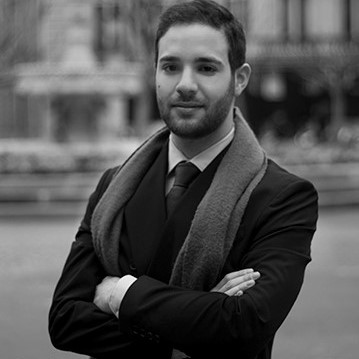

Georges German
+ 33 6 15 83 38 16
georges.german@essec.edu
Three years ago, I left my home country, Lebanon, to continue my higher education in France, facing uncertainty, upheaval, and broadened horizons for the first time in my life. However, never had I imagined I would learn much more than. Ever since, I have not stopped changing, learning and growing. Through my exchange programs, I learned to overcome my shyness and open up to the world. I learned to interact with people and learn from them, instead of believing in the absoluteness of my own ideas. Through volunteering, I became a more mature and engaged person. I learned to always get back on my feet and to never accept failure. I learned to use my own mistakes and my own faults and failures to become a better person. But most importantly, I have not stopped changing and learned to embrace change and to see change not as something to be feared but as an opportunity to grow and improve. With change, I am now able to move forward, to become a better person and to face increasingly difficult obstacles. The road before me is long, but I am not done changing. I now look forward to doing so, to learning from other people, and to constantly looking into myself.
"The harder I work, the luckier I get" - Taïg Khris
Check my full profileEducation
- INSEAD – Fontainebleau, France & Singapore (2020 – 2021) – Master in Management
- ESSEC Business School – Paris, France (2016 – 2020) – Global Bachelor of Business Administration, English Track (Master of Arts) – Cumulative GPA: 17.19/20; Ranked 2nd among 437 students; Placed on the Dean’s List.
- King’s College – London (January – June 2019) Exchange Semester – First-Class Honours
- ESSEC Asia-Pacific – Singapore (January 2018 – June 2018) Intercampus Exchange – GPA: 17.93/20
- University of Balamand – Tripoli, Lebanon (2015 – 2016) Bachelor of Science – Biology (2 validated semesters). Placed on the dean’s list in both semesters.
- Collège Notre Dame du Balamand – Tripoli, Lebanon (2012-2015) Lebanese Baccalaureate – Life Sciences, French. Graduated with distinction, first of my promotion and was ranked in the top percentiles across my country
Professional Experience
- Louis Vuitton (International Headquarters) – Business Analyst – Paris, France (July – December 2019)
- Developed skills in Project Management by piloting the Mystery Shopping Worldwide Wave of 2019
- Demonstrated and further developed skills in Data Analytics by conducting daily analyses on several topics (Omnichannel Retailing, Customer Experience, Service Excellence, etc.)
- Helped in shaping Louis Vuitton’s global retail strategy by participating in weekly meetings with the company’s top executives and presenting the main findings of my data analyses
- Animated a workshop for Field Coaches from different countries to help them understand how to use Business KPIs in their daily job in order to elevate the customer experience
- Fincley Consulting – Junior Consultant – Paris, France (June – September 2018)
- articipated in a consulting mission regarding change management within a team of 3 consultants
- Helped in restructuring the Front Office, Middle Office and Back Office of an insurance company located in Paris
- Organized a seminar to prepare the employees effectively for the change
- Fincley Consulting – Administrative and Financial Manager Assistant – Paris, France (May – September 2017; June – September 2018)
- Developed my analytical skills by conducting regular strategic cost analyses for the company
- Redesigned the company’s website, using CSS coding and the WordPress platform
- Managed the recruitment process of the candidates applying to join the company
Volunteering Experience
- Wahat al Farah – Regular Volunteer – Bkeftine, Lebanon (May 2018 – Present)
- Teaching mentally challenged teenagers and adults cooking, crafting and sewing, while giving some of them computer lessons
- Teaching mentally challenged kids Mathematics, French and Arabic
- Creating healthy recipes the teenagers and adults can reproduce and the organization can sell in order to increase its revenue streams
Languages and Computer Skills
- English: Bilingual proficiency (IELTS: 8.0)
- French: Bilingual proficiency
- Arabic: Native proficiency
- Chinese: Limited working proficiency
- Spanish: Elementary proficiency
- Computer Skills: Full professional proficiency in MS Office, Power BI, QlikView, and IBM Cognos. Limited working proficiency in Python, SQL, VBA, Stata, CSS and HTML.
Extracurricular Activities
- Photography and Digital Retouching: 7 years of experience
- Writing: In both French and English
- Cooking: All types of eclectic dishes and desserts